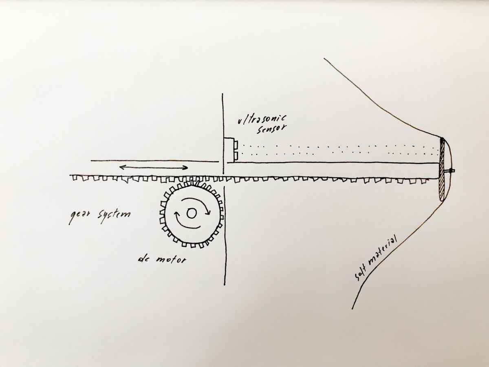
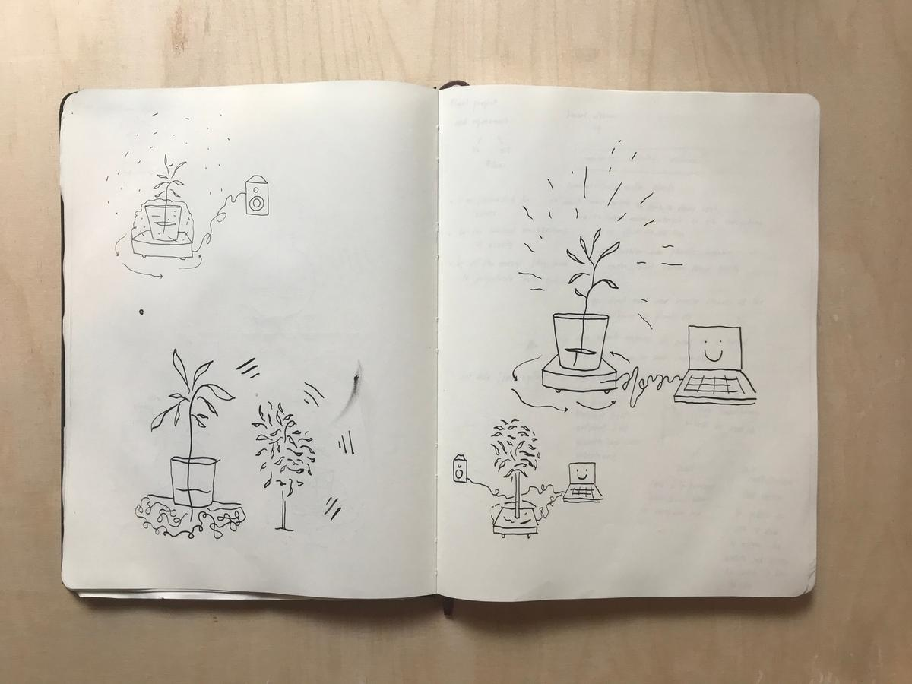
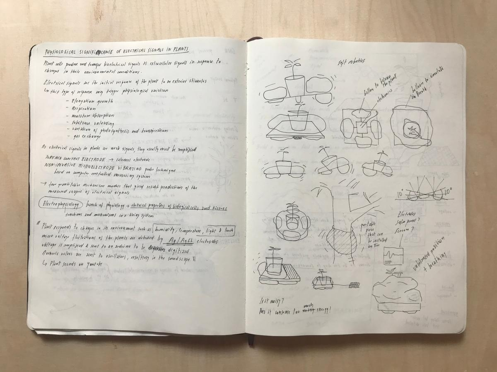
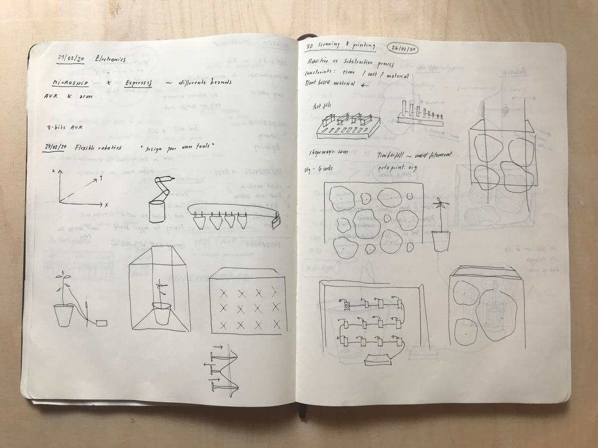
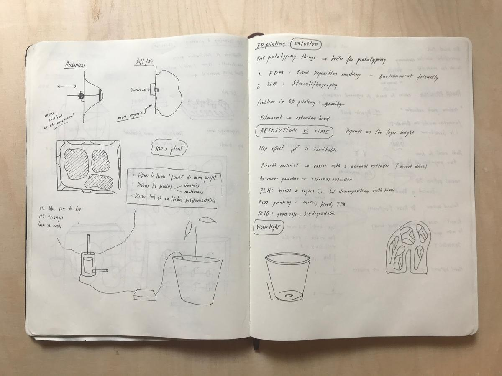
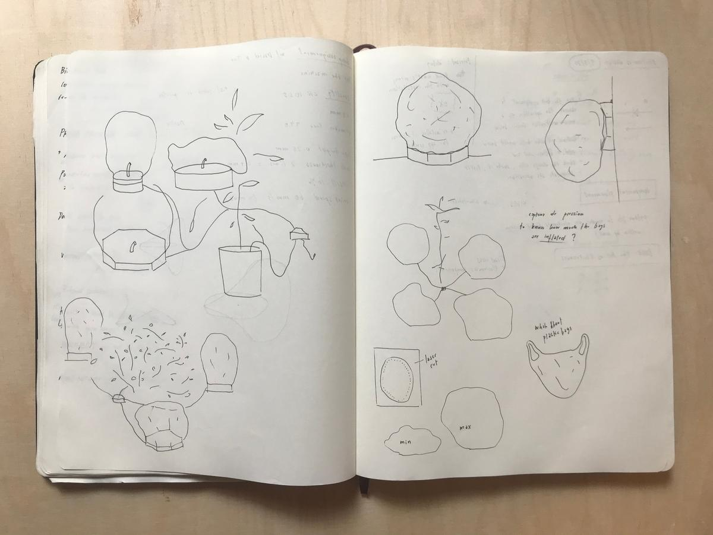
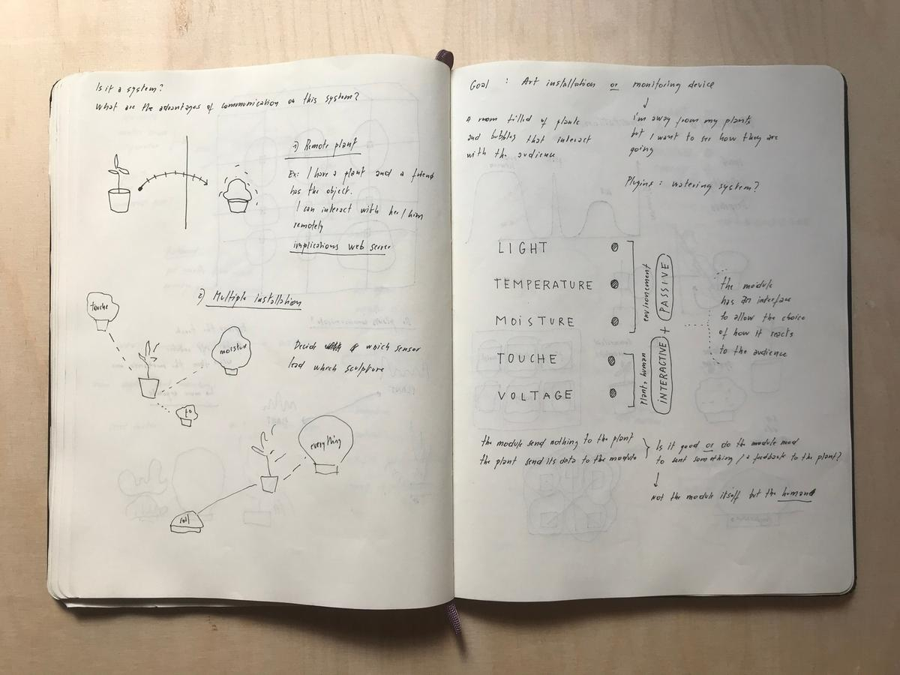

Research
This page is where I collect some of my thoughts on my final project idea.
Listen to what the plants have to say
Plants communicate as we do. But it's hardly noticeable for us because we don't send and receive signals at the same speed as they do. This is why I would like to build a kind of machine that can help any plant to express its needs at a speed that we can actually perceive and understand. Or should I reformulate in a less human-centric way: a machine that can help humans understand what the plants have to say.
A machine that helps us understand plants
The machine I have in mind is able to get the data from a plant [temperature, light level, air quality, humidity level, nutrient level, vibrations, ?] and transform it into something visual or audible. The machine itself could be small, like a tool that helps humans understand plants in everyday life, or large, as an art installation that invites the public to join a piece of nature, to watch and listen to what it has to say.
Breathing
Breathing (or respiration) is a very common process between plants and animals. This is the kind of movement I can use to represent how the plant feels in relation to its environment.
Data visualization
Before trying to understand what's going on between complex structrures such as plants, a good first step for me is to explore and familiarize myself with the data that I can collect about them and their environement, with the tools we have in fablabs and with the process of digital fabrication. Understand and visualize the needs and activity of plants. Here is my fab academy masterpiece, my final project which represents what I learned.
Mechanical movement
I'm thinking about a machine that can represent the movement of the breath, by using mechanics instead of air, and therefore I can have the control on what's happening, ahd what kind of movement is made.
I imagine a grid of rods pushing into a soft material and therefore deforming it. Each stem is linked to a data type (temperature, moisture level, etc.) and adjust its level depending on the state of the data. The soft material takes a unique shape according to plant's needs.

Luminous choreography according to the plant's electrical signal
The electrical signal of the plant, collected using electrodes and a signal amplifier, adjust the level of the LED's to give a visual signal on the pulses of the plants.
Global reaction to a human touch
If a human touches the plant, the installation reacts as well, inviting the people to give a special attention to it. This can be made using the touche sensor, as seen here.
Sketches

A kind of "spaceship" for plants. A machine that help them to move according to the light or a animal presence?

Using air pressure instead of mechanics. Get something more organic, less predictable.
Lots of interative elements of differents size. Create a landscape.

 
An installation that could hang on a tree or be dropped off somewhere. A system, a network.

Use of 5 differents sensors: light level, temperature, moisture level sensor, touche, voltage of the plant.
Each module could represent either one of these activy or a sum of several. A plant could send its data to one module or to several.
One could compose a unique installation that invites us to get closer to plants, to observe them, to take care of them.

A module could be assembled with others on a common structure to build a massive installation. Or a module could be kept apart as a stand-alone piece.